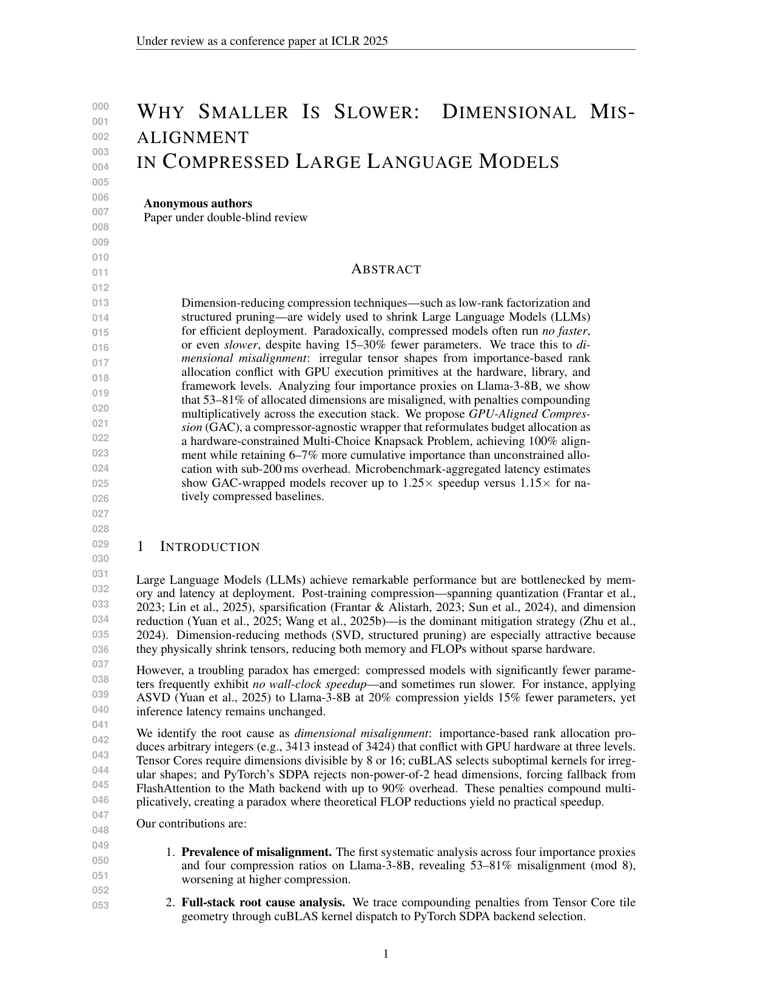
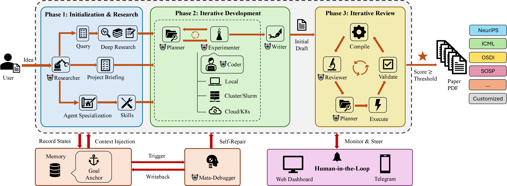

حول ARK
ARK (حزمة البحث التلقائي) هي خدمة أتمتة بحثية تحوّل الفكرة إلى ورقة علمية. أعطها فكرة بحثية ومؤتمراً مستهدفاً — يتولى ARK مراجعة الأدبيات وتصميم التجارب وتنفيذ الكود وتوليد الأشكال وكتابة LaTeX والمراجعة التكرارية. ستة وكلاء AI متخصصون يتعاونون عبر خط أنابيب منظم، بينما تبقى أنت في السيطرة عند كل نقطة تفتيش عبر لوحة التحكم أو Telegram.
النتائج
أوراق علمية حقيقية أنتجها ARK من البداية إلى النهاية.
 قالب: EuroMLSys
قالب: EuroMLSys
 قالب: ICML
قالب: ICML
 قالب: NeurIPS
قالب: NeurIPS

قالب: ICLRذكاء المؤتمرات
لماذا ARK
كيف يعمل
بحث وتطوير ومراجعة — تكرار مستمر حتى تستوفي الورقة معايير الجودة.

يجمع البحث العميق المعرفة الخلفية ومسح الأدبيات.
تخطيط التجارب، التشغيل على الحوسبة، تحليل النتائج، كتابة المسودة الأولى.
تحسين تكراري حتى تبلغ درجة المراجعة عتبة القبول.
تعرّف على الفريق
ستة متخصصين يتعاونون من خلال حالة مشتركة وتسليمات منظمة.
يحلل المقترحات، يولّد استعلامات بحث عميق، ويُمهّد الاقتباسات.
يُقيّم الأوراق صفحة بصفحة ويُسجّل عبر أبعاد متعددة.
يصنّف المشكلات، يُنشئ مهام إصلاح، ويخطط التجارب.
يعدّل أوراق LaTeX وسكريبتات رسم Python.
يُشغّل تجارب حقيقية، يجمع ويحلل النتائج.
يكتب كود الإنتاج والاختبارات ويحافظ على جودة الكود.